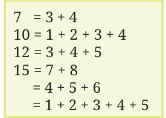
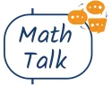
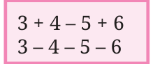
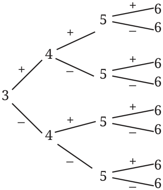
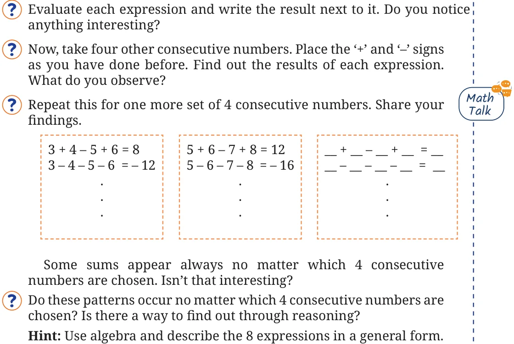
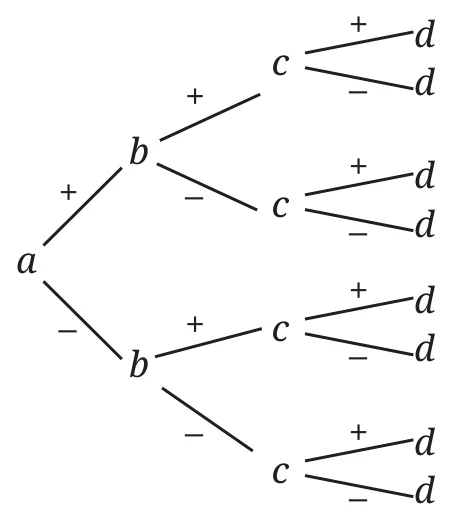

5.1 Is This a Multiple Of?
Sum of Consecutive Numbers
Anshu is exploring sums of consecutive numbers. He has written the following —

Now, he is wondering —
- “Can I write every natural number as a sum of consecutive numbers?”
- “Which numbers can I write as the sum of consecutive numbers in more than one way?”
- “Ohh, I know all odd numbers can be written as a sum of two consecutive numbers. Can we write all even numbers as a sum of consecutive numbers?”
- “Can I write \(0\) as a sum of consecutive numbers? Maybe I should use negative numbers.”

Explore these questions and any others that may occur to you. Discuss them with the class.
Take any \(4\) consecutive numbers. For example, \(3, 4, 5,\) and \(6\). Place ‘\(+\)’ and ‘\(-\)’ signs in between the numbers. How many different possibilities exist? Write all of them.


Eight such expressions are possible. You can use the diagram below to systematically list all the possibilities.

\(3 + 4 + 5 + 6\)
\(3 + 4 + 5 - 6\)

You might have noticed that the results of all expressions are even numbers. Even numbers have a factor of \(2\). Negative numbers having a factor \(2\) are also even numbers, for example, \(-2\), \(-4\), \(-6\), and so on. Check if anyone in your class got an odd number.
When \(4\) consecutive numbers are chosen, no matter how the ‘\(+\)’ and ‘\(-\)’ signs are placed between them, the resulting expressions always have even parity.

Now take any \(4\) numbers, place ‘\(+\)’ and ‘\(-\)’ signs in the eight different ways, and evaluate the resulting expression. What do you observe about their parities?
Repeat this with other sets of \(4\) numbers.
Is there a way to explain why this happens?
Hint: Think of the rules for parity of the sum or difference of two numbers.
Explanation 1: Let us consider any of the \(8\) expressions formed by four numbers \(a\), \(b\), \(c\), and \(d\). When one of its signs is switched, its value always increases or decreases by an even number! Let us see why.
Consider one of the expressions: \(a + b - c - d\).
Replacing \(+b\) by \(-b\), we get
\(a - b - c - d.\)
By how much has the number changed? It has changed by
\((a + b - c - d) - (a - b - c - d)\)
\(= a + b - c - d - a + b + c + d\) (notice how the signs changed when we opened the second set of brackets)
\(= 2b\) (this is an even number).
If the difference between two numbers is even, can they have different parities? No! So either both are even or both are odd.
Now, let us see what happens when a negative sign is switched to a positive sign.
Replace any negative sign in the expression \(a + b - c - d\) with a positive sign and find the difference between the two numbers.
What do you conclude from this observation?
Starting from any expression, we can get \(7\) expressions by switching one or more ‘\(+\)’ and ‘\(-\)’ signs. Thus, all the expressions have the same parity!
Explanation 2: We know that
\(\text{odd} \pm \text{odd} = \text{even}\)
\(\text{even} \pm \text{even} = \text{even}\)
\(\text{odd} \pm \text{even} = \text{odd}.\)
We have seen that the parity of \(a + b\) and \(a - b\) is the same, regardless of the parities of \(a\) and \(b\).
In short, \(a \pm b\) have the same parity. By the same argument, \(a \pm b + c\) and \(a \pm b - c\) have the same parity. Extending this further, we can say that all the expressions \(a \pm b \pm c \pm d\) have the same parity.

Explanation 3: This can also be explained using the positive and negative token model you studied in the chapter on Integers. Try to think how.
The number of ways to choose \(4\) numbers \(a\), \(b\), \(c\), \(d\) and combine them using ‘\(+\)’ and ‘\(-\)’ signs is infinite. Mathematical reasoning allows us to prove that all the combinations \(a \pm b \pm c \pm d\) always have the same parity, without having to go through them one by one.
Several problems in mathematics can be thought about and solved in different ways. While the method you came up with may be dear to you, it can be amusing and enriching to know how others thought about it. Two tidbits: ‘share’ and ‘listen’.
Is the phenomenon of all the expressions having the same parity limited to taking \(4\) numbers? What do you think?